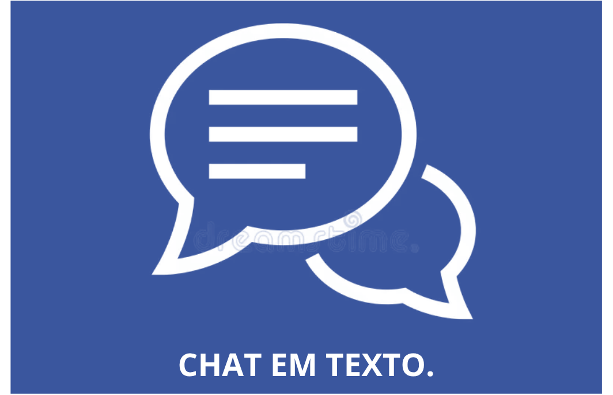

Central de Ajuda
Nossa missão é garantir que todas as pessoas tenham
uma experiência digital autônoma, segura e confortável.

Chat em Texto
Espapaço para ouvir, apoiar e trocar experiências
-
Troca de vivências
Converse com outros usuários em um espaço seguro para compartilhar experiências e dicas de navegação. -
Relate uma barreira
Encontrou alguma barreira digital no site? [Clique aqui para relatar] e resolveremos o quanto antes. -
Suporte em tempo real
Fale com nossa equipe por chat ou vídeo para tirar dúvidas com total autonomia e rapidez. -
Central de sugestões
Deixe suas ideias e feedbacks para nos ajudar a tornar este espaço cada vez mais inclusivo.

Trilha auditiva
Para pessoas surdas ou com deficiência auditiva. Tudo o que seria áudio ou telefone ganha texto e Libras.
-
Encontrar o produto
Vídeos de produto com legenda e transcrição. -
Pagar
Confirmação por texto e e-mail, sem ligação de verificação. -
Acompanhar a entrega
Avisos por mensagem escrita e orientação à entrega para não chamar por voz. -
Trocar ou devolver
Atendimento por chat em texto ou videochamada em Libras.

Trilha motora
Para pessoas com dificuldade de usar mouse ou tela. Uso por teclado, voz ou toque simples.
-
Encontrar o produto
Todos os menus acessíveis pela tecla Tab, com foco visível. -
Pagar
Botões grandes, preenchimento automático e menos etapas. -
Acompanhar a entrega
Escolha de horário e opção de entrega na porta. -
Trocar ou devolver
Pedido de coleta em casa, sem precisar ir a uma loja.

Trilha cognitiva
Para pessoas com deficiência intelectual ou cognitiva. Linguagem simples e um passo de cada vez.
-
Encontrar o produto
Poucos resultados por página, ícones com texto e comparação lado a lado. -
Pagar
Uma decisão por tela e resumo do pedido antes de confirmar. -
Acompanhar a entrega
Linha do tempo com frases curtas. -
Trocar ou devolver
Explicação em linguagem simples e opção de chamar uma pessoa de confiança.